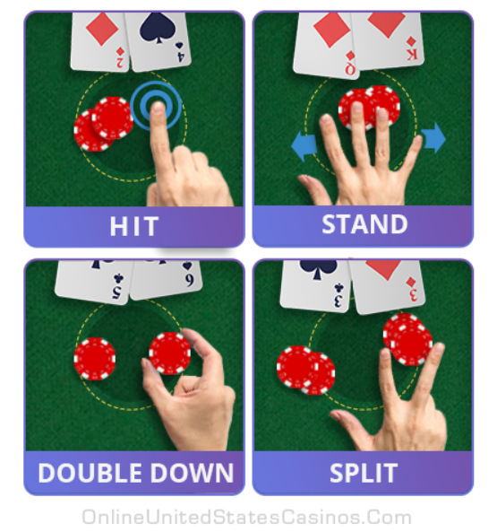

Introduction to Blackjack Rules

History of Blackjack
Blackjack's history lies within an English version of twenty-one called "Vingt-Un," a game of likely Spanish origin. The objective of the game is similar to modern-day Blackjack: to reach 21 points and that the Ace was worth either 1 or 11. Eventually, around 1899, it developed into an American version which offered bonus payouts if players' hands consisted of the Ace of spades and a blackjack (jack of clubs or jack of spades). Eventually, the rule was withdrawn, but the name stuck.
Objective
The objective of the game for each player is to either beat the dealer by getting a hand count closer than the dealer to 21 without going over 21 or “busting”.
Number cards count as their face value, and the jack, quee, and king, or the "face cards" count as 10. Aces can count as either 1 or 11, according to the player's choice. If at any point the player exceeds 21, they automatically lose.
Dealing
The game is played with a standard 52-card pack. The dealer deals one card face up to each player, then one face up themselves. They then deal another round face up, but keep their card face down. In the end, each player will have two face-up cards, and the dealer will have one face-up card and one face-down. The dealer will deal from the left to the right, and the dealer's hand gets the first face-up card.
At a casino, the players will start the round by placing their bets into the "betting box," and players can typically bet in as many boxes as they'd like.
Playing the Game
The player to the left goes first, and the players proceed in clockwise direction. Each player must decide whether to “stand”, or not ask for another card, or “hit”, and request another card to get closer to 21. If a player decides to hit, they can continue hitting one card at a time until they either decide to stand or they bust.
After the dealer has served all players, they turn their face-down card up. If the hand count is 17 or higher, the dealer must stand, otherwise they must draw cards one by one until the hand count is 17 or more. If the dealer has an ace and counting it as an 11 would make the hand count 17 or more, the dealer must count it as an 11.
Players with a total of 21 on their first two cards get a "natural blackjack," and the player wins immedietly unless the dealer also has one. A blackjack will beat any hand that isn't one, even if it has a value of 21.
Player Decisions
After recieving the two intiial cards, the player has a couple of options. Depending on the rules of the game, some options may be unavaliable to the player. However, generally you'll always be able to Hit and Stand. At casinos, you'll be able to double down, split, and surrender. All of these actions also have hand signals.
- Hit: Take another card.
- Stand: Take no more cards.
- Double Down: Double your initial bet and take one more card. The additional bet is put next to the original bet.
- Split: Create two hands when both cards are the same value. Each new hand gets another card, so essentially, the player now haas two hands. They are played out independently.
- Surrender: Forfeit half of the bet and end the hand immediately. This is always the first option, and this option is only avaliable at some casinos

These options also have hand signals, as shown above. For surrendering, it is usually a verbal cue. Hand signals help because of the table recording, so it can protect casinos against cheating.